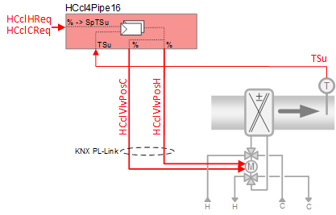
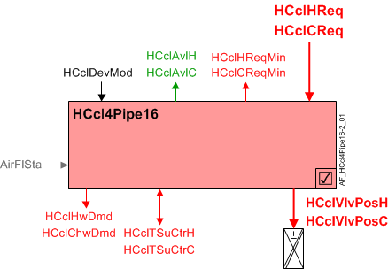
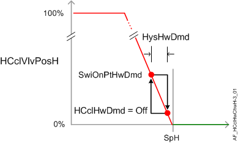
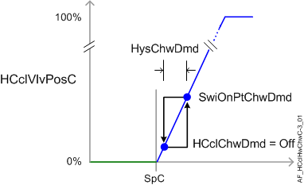

Heating / Cooling coil 4-pipe, 6-way valve, two analog outputs via PL-Link and supply air temperature control (HCcl4Pipe16)
 | This application function operates over KNX PL-Link a 6-way control valve that is supplied with hot or chilled water from separate heating and cooling systems. The request signals for heating and cooling (from the room controllers) are transformed into supply air temperature setpoints and are provided to their own PID controller(s) for cascaded supply air temperature control and quicker response |
Required elements and how to configure them:
Element | I/O | Signal type |
|---|---|---|
HCclVlvPos "Heating/cooling coil valve position" | KNX PL-Link device, Heating/cooling coil valve position | GDB111.9E/KN |
TSu "Supply air temperature" | On-board input, Supply air temperature | any signal type |
Function
The figure below shows BACnet objects associated with this application function. Primary signal flow is summarized as follows:
H/C coil heating or cooling request (HCclHReq / HCclCReq) is received and processed into the output signals for the H/C coil valve positions for heating and cooling (HCclVlvPosH / HCclVlvPosC).
Basic function: Accept request signal from associated room controller and map it to appropriate control setpoint; Compare setpoint to present value of supply air temperature sensor; Pass result through a device mode logic switch prior to outputting as a command to the object that controls the device.

| Command or request (or related) |
| Notification of condition or status, or availability |
| Device mode |
| Interlock (internal signal, not a BACnet object; see Interlocks section for additional information) |


Interlocks
Room automation interlocks are internal signals that coordinate interaction between HVAC devices. They are not visible in ABT Site or web interface, but parameters associated with them are. See comment column for hints on parameters that affect interlock functionality.
Signal | Type | Direction | Description | Comment |
|---|---|---|---|---|
AirFlCReq | Boolean | Out | Air flow cooling request | See Configuration section for parameters named "...AirFlCReq". |
AirFlHReq | Boolean | Out | Air flow heating request | See Configuration section for parameters named "...AirFlHReq". |
AirFlSta | Boolean | In | Air flow status | Parameter EnMonAirFlSta must = Yes. See Configuration section for additional information. |
Sequence
Hot/Chilled water valve modulation: In response to heating or cooling demand, this application function modulates the control valve(s) to control the room temperature at setpoint. In response to external triggers for special modes such as warm-up, cool down, or safety conditions, the control valve(s) may be set to off or fully open.
Cascaded supply air temperature control: The heating (or cooling) demand signal (HCclHReq, HCclCReq) is received from the respective room temperature PID. It is then mapped to a setpoint value for supply air temperature (HCclSpTSuH or HCclSpTSuC), and used as input to the respective cascaded supply air temperature PID (one heating, one cooling) located in this AF. The supply air PID compares the setpoint value to the present value of the supply air temperature sensor, and any difference is used to increase or decrease the analog output signal to the command objects (HCclVlvPosH, HCclVlvPosC).
If the supply air temperature sensor is not valid, temperature control is performed by the room temperature PID.
Note
This AF does not perform loop control; its main purpose is to run commands. Loop control processes (for this AF) are managed in the "room" AF(s) that collaborate with this AF to command the end device.
Device mode: The input signal for device mode is a multistate value.
HCclDevMod supports the following states:
- Off
- Control mode (modulation)
- Fully open, heating
- Fully open, cooling
Heating available status: When the H/C coil is available for heating, the binary output signal for "Heating/cooling coil available for heating " (HCclAvlH) will be "Yes" (available). HCclAvlH is used by the system to regulate heating resources. For example, if there is a call for heating but the H/C coil is not available because it is already at maximum capacity (because device mode is fully open), then HCclAvlH will signal "No" and the next available heating resource in the temperature control sequence will be activated.
For heating available status to be "Yes", device mode must equal "Control mode" (modulation).
Cooling available status: When the H/C coil is available for cooling, the binary output signal for "Heating/cooling coil available for cooling" (HCclAvlC) will be "Yes" (available). HCclAvlC is used by the system to regulate cooling resources. For example, if there is a call for cooling but the H/C coil is not available because it is already at maximum capacity (because device mode is fully open), then HCclAvlC will signal "No" and the next available cooling resource in the temperature control sequence will be activated.
For cooling available status to be "Yes", device mode must equal "Control mode" (modulation).
Supply chain interface outputs
HCclHwDmd supports the following states:
- Off (no demand signal)
- Heating demand (demand signal is active)
- Warm-up (Hot water demand is initiated when plant operating mode is set to warm-up)
HCclChwDmd supports the following states:
- Off (no demand signal)
- Cooling demand (demand signal is active)
- Free cooling (cooling device is in free cooling mode)
Free cooling can be initiated by the central plant when surplus cooling capacity is available. Under certain conditions, the room can take advantage of surplus cooling capacity in the absence of an explicit cooling demand; the room temperature must be below the setpoint associated with the current room climate mode (Comfort, Pre-Comfort etc.). This type of free cooling is different from "economizer" free cooling, which uses an outside air damper.
Supply chain interface inputs
The input signals for hot water availability / chilled water availability are binary values [No|Yes] determined by central command. They are commanded via supply chain group communication for the purpose of TOa-dependent device lockout. The relinquish default value for each is Yes.
HCclHwAvl: If the outside air temperature is above the hi limit value, HCclHwAvl is set to No and the heating valve is closed. (see Central AF SplyHwxx for additional information)
HCclChwAvl: If the outside air temperature is below the low limit value, HCclChwAvl is set to No and the cooling valve is closed. (see Central AF SplyChwxx for additional information)
If for some reason HCclHwAvl and HCclChwAvl are both "No", then device mode (HCclDevMod) is set to Off at priority 9.
The following figure(s) illustrates control modulation and related functions.


Configuration
 Parameters
Parameters
Description | Parameter | Default value |
|---|---|---|
Manual control mode 1:Auto | CtlModMan | 1:Auto |
Supply air temperature setpoints | ||
Maximum supply air temperature setpoint for cooling | SpTSuCMax | 32 [°C] |
Minimum supply air temperature setpoint for cooling | SpTSuCMin | 16 [°C] |
Maximum supply air temperature setpoint for heating | SpTSuHMax | 32 [°C] |
Minimum supply air temperature setpoint for heating | SpTSuHMin | 16 [°C] |
Supply air temperature setpoint heating differential to room setpoint | DiffSpTSuHSpR | 10 [K] |
Interlocks | ||
Switch-on point for air volume flow cooling request | SwiOnAirFlCReq | 4 [%] |
Hysteresis for air volume flow cooling request | HysAirFlCReq | 2 [%] |
Switch-on delay for air volume flow cooling request | DlyOnAirFlCReq | 30 [s] |
Switch-on point for air volume flow heating request | SwiOnAirFlHReq | 4 [%] |
Hysteresis for air volume flow heating request | HysAirFlHReq | 2 [%] |
Switch-on delay for air volume flow heating request | DlyOnAirFlHReq | 30 [s] |
Enable monitoring for air volume flow state 0:No | EnMonAirFlSta | 1:Yes |
Hot/chilled water demand | ||
Switch-on point for chilled water demand | SwiOnPtChwDmd | 4 [%] |
Hysteresis for chilled water demand | HysChwDmd | 2 [%] |
Switch-on point for hot water demand | SwiOnPtHwDmd | 4 [%] |
Hysteresis for hot water demand | HysHwDmd | 2 [%] |
Internal settings – do not change | ||
Temperature unit | TUnit | [°C] |
Temperature difference unit | TDiffUnit | [K] |
Interface
Interface | Description | Type | Ref. | Owned by |
|---|---|---|---|---|
HCclVlvPosC | Heating/cooling coil valve position for cooling | AO | ◉ | Room segment / Device |
HCclVlvPosH | Heating/cooling coil valve position for heating | AO | ◉ | Room segment / Device |
HCclSpTSuC | Heating/cooling coil supply air temperature setpoint for cooling | APrcVal | ● | - |
HCclSpTSuH | Heating/cooling coil supply air temperature setpoint for heating | APrcVal | ● | - |
PrSpRu | Present setpoint for room operator unit | APrcVal | ● | - |
HCclDevMod | Heating/cooling coil device mode 1:Off | MPrcVal | ● | - |
HCclTSuCtrC | Supply air temperature controller cooling for heating/cooling coil | Controller | ● | - |
HCclTSuCtrH | Supply air temperature controller heating for heating/cooling coil | Controller | ● | - |
HCclCReq | Heating/cooling coil cooling request | ACalcVal | ● | - |
HCclCReqMin | Heating/cooling coil cooling request minimum | ACalcVal | ● | - |
HCclHReq | Heating/cooling coil heating request | ACalcVal | ● | - |
HCclHReqMin | Heating/cooling coil heating request minimum | ACalcVal | ● | - |
HCclAvlC | Heating/cooling coil available for cooling 0:No | BCalcVal | ● | - |
HCclAvlH | Heating/cooling coil available for heating 0:No | BCalcVal | ● | - |
HCclChwDmd | Heating/cooling coil chilled water demand 1:Off | MCalcVal | ● | - |
HCclHwDmd | Heating/cooling coil hot water demand 1:Off | MCalcVal | ● | - |
HCclChwAvl | Heating/cooling coil chilled water available 0:No | BPrcVal | ● | - |
HCclHwAvl | Heating/cooling coil hot water available 0:No | BPrcVal | ● | - |
HCclSplyChw | Heating/cooling coil supply chain for chilled water | GrpMbr | ● | Room segment |
HCclSplyHw | Heating/cooling coil supply chain for hot water | GrpMbr | ● | Room segment |
Engineering and commissioning
The H/C coil must be configured to provide one of the following conditions: Automatic (provides both heating and cooling), Heating, or Cooling. This is done using parameter CtlModMan.